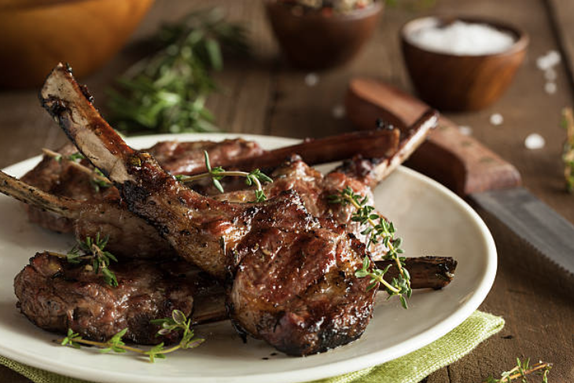

Lamp Chops

Lamb Chops
Ingredients:
- 4 lamb chops
- 2 tablespoons olive oil
- 2 cloves garlic, minced
- 1 teaspoon dried rosemary
- 1/2 teaspoon salt
- 1/4 teaspoon black pepper
Steps:
- Preheat the grill to medium-high heat.
- In a small bowl, mix together the olive oil, minced garlic, dried rosemary, salt, and black pepper.
- Brush both sides of the lamb chops with the olive oil mixture.
- Place the lamb chops on the preheated grill and cook for about 4-5 minutes per side for medium-rare, or adjust the cooking time according to your preferred doneness.
- Remove the lamb chops from the grill and let them rest for a few minutes before serving.
- Serve the lamb chops hot and enjoy!